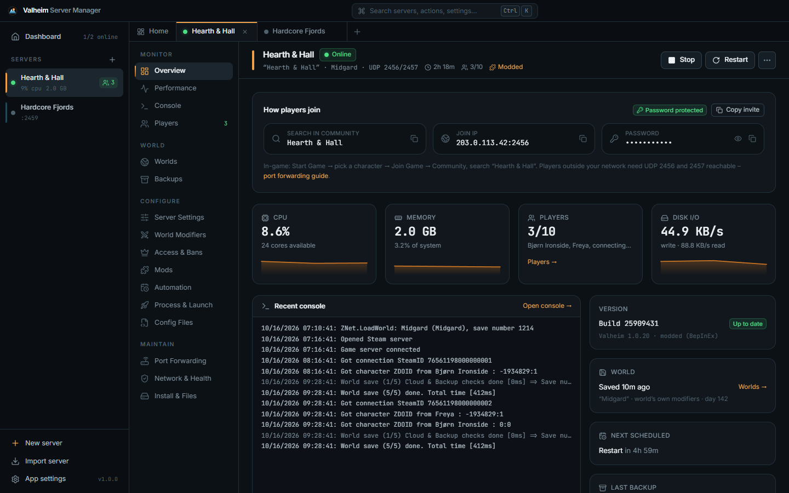
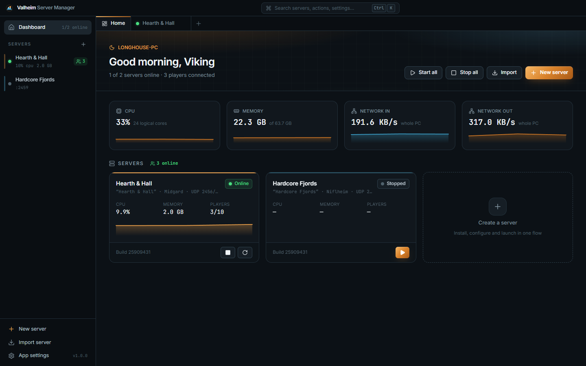
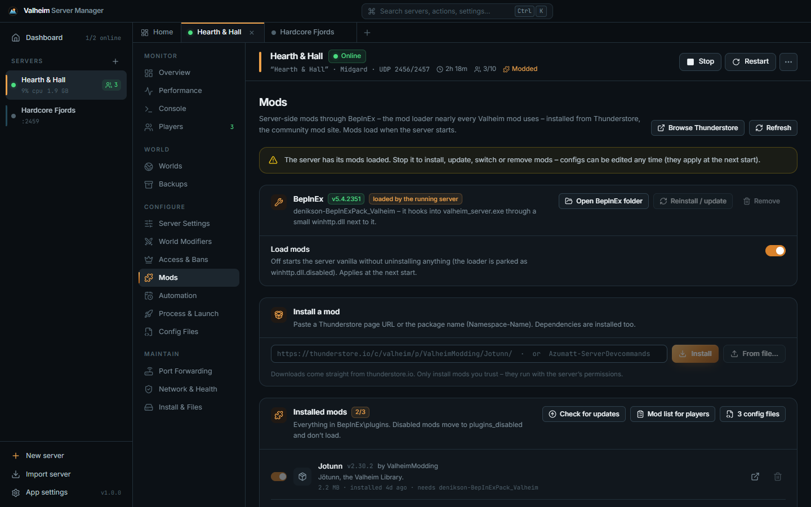
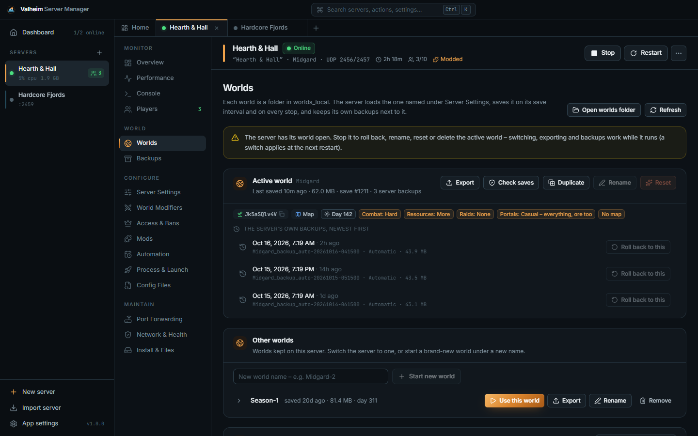

Install, configure, run, mod and protect Valheim dedicated servers from one calm desktop app. World modifiers, crossplay join codes, Thunderstore mods, live players, world rollback and backups – no SteamCMD, no guesswork.

Every option the dedicated server knows, in plain language – checked against the server's own rules before it ever starts.
A four-step wizard picks a free port pair, checks your password, sets the difficulty and downloads the server through SteamCMD – no Steam account needed.
Iron Gate's presets as cards, plus combat, death penalty, resources, raids, portals and the no-map / no-build-cost rules. Save your own sets for every server.
Paste a Thunderstore link – BepInEx and every dependency install themselves. Toggle, update and configure mods, or start vanilla with one switch.
One switch lets Xbox and Game Pass players in through PlayFab's relay – no port forwarding. The six-digit join code appears as soon as the server registers it.
See every world's seed, day and modifiers. Roll back to the server's own backups, rename safely, and bring your single-player world over in one click.
Live count straight from the server, names, SteamIDs and deaths from the log, play-time history, and admin / ban / allow lists edited safely.
Crash recovery that stops on start-up errors instead of looping, daily schedules, auto-update that waits for players to leave, stop-when-empty, memory and uptime limits, zip backups with verification, Windows toasts and Discord / Slack webhooks. Servers keep running when the app closes – and the tray can start or stop all of them.
One-click UPnP, firewall fixes (even the hidden Block rules), CGNAT detection, a "does Steam list me?" check and a health page with a fix for every problem.

Most Valheim mods run on BepInEx. The manager installs it, resolves dependencies and keeps your configs safe.
Namespace-Name – dependencies come along..cfg files are never overwritten.

Grab Valheim-Server-Manager-Setup.exe from the latest release (or the portable zip) and run it.
Name, password (5+ characters, not part of the name), world and difficulty – then Create & install (~1 GB).
A fresh world is generated and online in under a minute. Already have a world? Import it first.
Forward UDP 2456–2457 with one click, or turn on Crossplay. Copy invite puts everything in one message.
Setup.exe (recommended) · .msi · Portable.zip · SHA256SUMS.txtOpen Network & Health → Steam server list. If it's not listed, allow the firewall and forward UDP 2456–2457 (Port Forwarding does it over UPnP), or turn on Crossplay. The manager also asks Steam automatically three minutes after every start and warns you if it's missing.
Almost always the password: a public Valheim server refuses passwords shorter than 5 characters or that appear in the server name – and then hangs instead of exiting. The manager checks this before starting, catches it if it happens anyway, stops the process and tells you why.
Yes – turn on Crossplay under Server Settings. Players connect through PlayFab's relay with the join code shown on the Overview, your public IP, or the server list. Port forwarding isn't needed (a LAN address doesn't work with Crossplay).
Usually yes, in the same versions – except mods marked server-side only. The Mods page has a "Mod list for players" button that copies every mod with its Thunderstore link.
Nothing. Valheim stores characters on each player's PC; the server only holds the world. Rollbacks, resets and imports always keep a copy of the world they replace.
The manager encrypts it with Windows DPAPI in its own files and masks it wherever it shows the command line. Valheim itself only accepts the password on its command line, so other programs on the same PC could see it while the server runs.
No accounts, no telemetry. It talks to Steam (downloads, update checks, the listing check), Thunderstore (only when you install or check mods), a public-IP lookup and your router (UPnP – only when you click).
Free, open source and built for people who'd rather play than edit batch files.